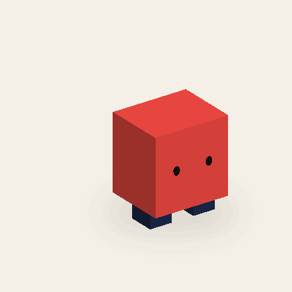

E01 / PROCEDURAL MOTION
기본 블록봇
이동 · 짧은 두 발로 통통 걸으며 몸을 좌우로 기울여요.

프리뷰 범위
파트 위치·회전·크기는 프레임 사이에서 보간하고, 파트 표시 상태는 프레임 값으로 전환합니다. 쓰러짐은 기본적으로 한 번만 재생한 뒤 마지막 전투 불능 상태를 유지합니다.
투명 블록봇의 파트 투명도도 모션 중 유지됩니다. 로컬 Three.js와 스크립트 데이터만 사용합니다.
이동 · 짧은 두 발로 통통 걸으며 몸을 좌우로 기울여요.

파트 위치·회전·크기는 프레임 사이에서 보간하고, 파트 표시 상태는 프레임 값으로 전환합니다. 쓰러짐은 기본적으로 한 번만 재생한 뒤 마지막 전투 불능 상태를 유지합니다.
투명 블록봇의 파트 투명도도 모션 중 유지됩니다. 로컬 Three.js와 스크립트 데이터만 사용합니다.